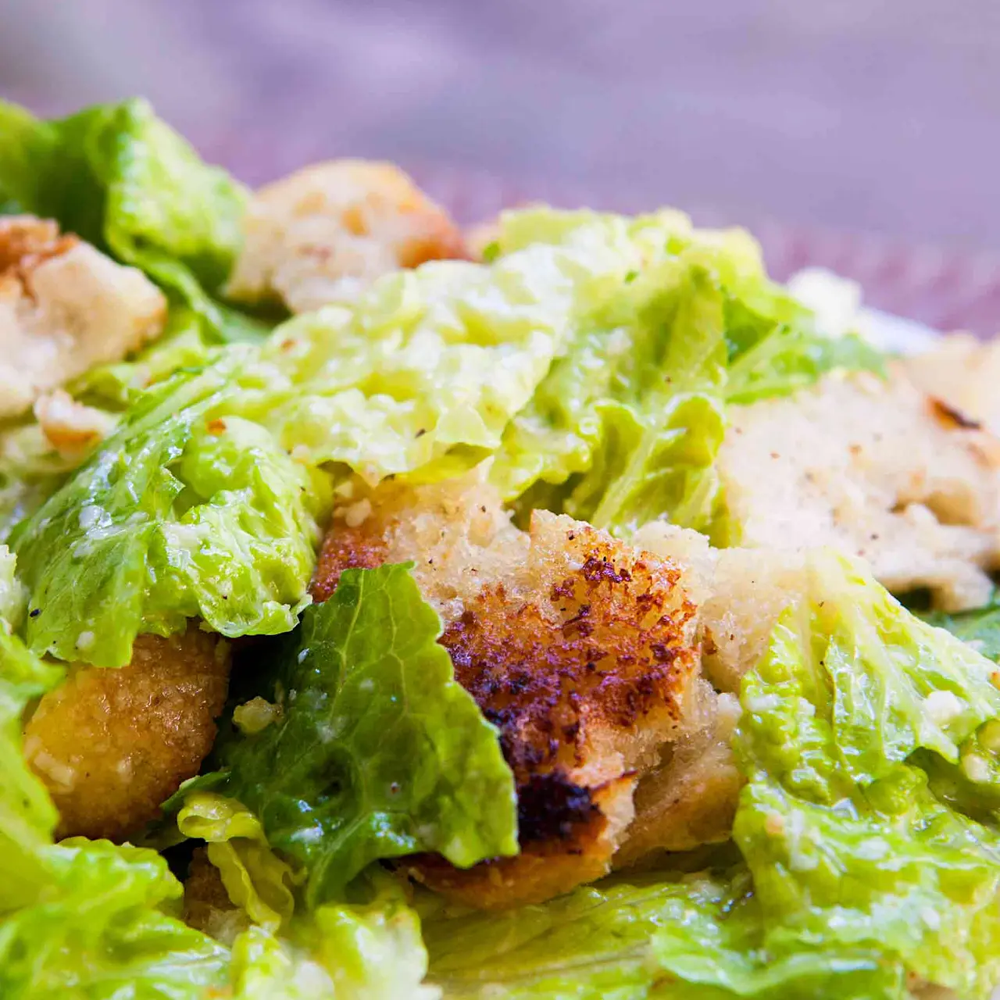

Ingrédients pour la Salade César
- 1/2 tasse d'huile d'olive extra vierge (de haute qualité)
- 4 gousses d'ail (fraîches, pelées, écrasées puis hachées)
- 1 baguette (de préférence d'un jour, tranchée finement)
- 1/4 tasse de jus de citron (fraîchement pressé, plus selon le goût)
- 4 oz de fromage Parmesan (râpé)
- 1 c. à café de pâte d'anchois (ou 1-2 anchois écrasés et hachés)
- 2 œufs
- Poivre noir fraîchement moulu (1/4 c. à café ou selon le goût)
- 1/2 c. à café de sel
- 6 têtes de laitue romaine (rincées, séchées, et feuilles flétries retirées)
